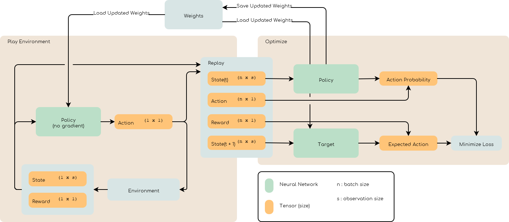

Training
In the previous section we were able to launch our environment, for simplicity we did a random action at each step. Now it is time to train a neural net work that will learn to perform the right action given the state of the game.
{kind=link}
One problem of reinforcement learning is efficiency. On a typical machine learning task the training pipeline can load huge batch of training data.
Reinforcement learning on the other hand generate the training data on the fly. This means the batch size is limited to 1 which tanks the training efficiency.
To improve efficiency, the simulation is ran using an offline network (i.e no training), observations, actions and rewards are saved in a replay buffer that can be sampled later to optimize the network. The optimization is ran when the replay buffer is full and the weights of the networks gets updated.
To avoid stopping the simulation during the optimization step can be run asynchronously as well.
Warning
Making things run asynchronously can hinder reproducibility of the training.
References
- 1
- 2
- 3